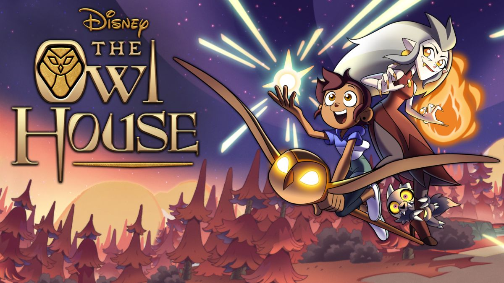

Luz, uma adoslencente humana, que por acaso tropeça em um portal para um novo mundo mágico, onde ela faz amizade com uma bruxa rebelde, Eda, e um guerreiro minúsculo, King. Apesar de não ter habilidades mágicas, Luz vai atrás de seu sonho de se tornar uma bruxa, servindo como aprendiz de Eda, a bruxa coruja.
32 Anos (08/12/1990)
Dana Terrace é cartunista, animadora, escritora, diretora, produtora e dubladora americana. Ela é mais conhecida como a criadora da série animada do Disney Channel The Owl House. Ela também é conhecida por fazer storyboard em Gravity Falls e dirigir o reboot de DuckTales em 2017.